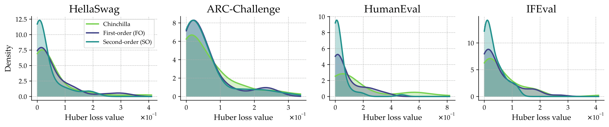

Machine learning progress is often attributed to scaling model size and dataset volume, yet the composition of data can be just as consequential. Empirical findings repeatedly show that combining datasets from different domains yields nontrivial interactions. For instance, adding code improves mathematical reasoning, while certain mixtures introduce interference that reduces model performance. We refer to these effects collectively as data synergy, where the contribution of multiple domains exceeds or falls short of the sum of their isolated contributions. In this work, we formalize and quantify data synergy in language model pretraining. Leveraging observational variation across open-weight LLMs with diverse pretraining mixtures, we estimate both direct domain-to-benchmark synergy (how one domain contributes to performance on another) and a second-order domain-domain synergy (capabilities that require co-occurrence of multiple domains). Our framework improves predictive accuracy over domain-agnostic scaling laws and recovers stable synergy estimates. We validate these estimates by training models on predicted optimal and predicted anti-optimal mixtures and confirm that our synergy estimates correctly predict performance rankings.
Classical scaling laws relate loss to parameter count and total token count, assuming all tokens contribute equally. But models pretrained on different mixtures scale differently on the same benchmark. On HumanEval, a single domain-agnostic exponent fits poorly ($R^2 = 0.17$), while allowing a per-mixture exponent captures the variation ($R^2 = 1.00$): removing code or math data reduces the data scaling exponent, while the full mixture scales faster.

HumanEval. The data exponent $\beta$ falls from $0.45$ under the full dolma1.7 mixture to $0.18$ once code is removed.
We start from the Chinchilla form $L(N, D) = L_\infty + A N^{-\alpha} + B D^{-\beta}$ and progressively make the data term composition-aware, while preserving the overall shape of the law.
First-order domain→benchmark synergy. Each training domain $k$ gets a per-benchmark coefficient $\gamma_{j,k}$ that additively modifies the data scaling exponent, $\beta_j + \gamma_{j,k}$. With mixture shares $u_{i,k}$, the data term becomes $$L_j(N_i, d_i, u_i) = L_{\infty,j} + A_j N_i^{-\alpha_j} + B_j\, d_i^{-\beta_j} \prod_k (u_{i,k}\, d_i)^{-\gamma_{j,k}\, u_{i,k}},$$ so a positive $\gamma_{j,k}$ means tokens from domain $k$ reduce loss on benchmark $j$ faster than the baseline rate (synergy), and a negative one means slower (interference).
Second-order domain–domain synergy. Some gains only materialize when two domains co-occur in the corpus. We add a shared symmetric interaction matrix $\Sigma = \{\sigma_{kk'}\}$ whose pairwise term vanishes if either domain is absent and is bottlenecked by the scarcer domain (a softmin over per-domain log-token budgets). The result reads as a change in effective data size: co-occurring synergistic domains contribute benchmark-specific “bonus tokens” $D_{\textit{eff}} > D$, while interfering pairs shrink it.
Estimation from observational data. All parameters are fit on 52 open-weight models (70M–20B parameters) spanning six model families with documented pretraining mixtures, mapped to eight domains (books, code, encyclopedia, legal, math, Q&A, science, web) and evaluated on 11 benchmarks. We fit with a Huber loss, $\ell_1$/$\ell_2$ regularization, 5-fold cross-validation, and bootstrap uncertainty quantification.

The strongest synergies appear for code and math benchmarks — e.g., on HumanEval, $\gamma_{\text{code}} = {+}0.47$ and $\gamma_{\text{math}} = {+}1.34$ — consistent with prior findings that math and code data reinforce each other. The same fit identifies reliable interference, most clearly from books and encyclopedia on code benchmarks. The first-order model reaches a median cross-validated $R^2$ of $0.906$ across benchmarks, versus $0.41$ (HumanEval) and $0.20$ (MBPP) for the domain-agnostic baseline.

The largest pairwise interactions are $\sigma_{\text{code,science}} = {+}2.55$ and $\sigma_{\text{code,math}} = {+}2.40$: when code co-occurs with math or scientific data, the pair contributes more than the sum of the two domains’ first-order effects. The clearest negative interaction is math × books. A negative $\sigma$ is actionable — when a target benchmark favors one such domain, a mixture should not also spend tokens on its interfering partners.

HumanEval and IFEval.
To test whether the observational estimates are actionable, we use the fitted laws to predict optimal and anti-optimal pretraining mixtures for three target tasks, then train models at 30M and 150M parameters on each. The scaling law correctly predicts the ranking between optimal and anti-optimal mixtures for all tasks at both scales — on HumanEval, the optimal mixture improves bits-per-byte by 31% (relative to a balanced baseline) over the anti-optimal one.
| Metric (BPB, ↓) | Balanced | Optimal | Anti-optimal | Gap |
|---|---|---|---|---|
| 30M parameters, 3B tokens | ||||
HumanEval | 1.268 | 1.110 (−12.4%) | 1.503 (+18.6%) | 0.393 |
GSM8K | 1.818 | 1.779 (−2.1%) | 1.935 (+6.5%) | 0.156 |
IFEval | 1.451 | 1.513 (+4.3%) | 1.551 (+6.9%) | 0.038 |
| 150M parameters, 5B tokens | ||||
HumanEval | 0.868 | 0.721 (−16.9%) | 1.058 (+21.9%) | 0.337 |
GSM8K | 1.643 | 1.402 (−14.7%) | 1.591 (−3.2%) | 0.189 |
IFEval | 1.366 | 1.324 (−3.0%) | 1.365 (−0.0%) | 0.041 |
@article{hamidieh2026domain,
title={Domain-Aware Scaling Laws Uncover Data Synergy},
author={Hamidieh, Kimia and Mackey, Lester and Alvarez-Melis, David},
journal={arXiv preprint arXiv:2607.11052},
year={2026},
}